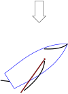

heave

Has synonym(s): heaving
Definition: In sailing, heaving to (to heave to and to be hove to) is a way of slowing a sailing vessel's forward progress, as well as fixing the helm and sail positions so that the vessel does not have to be steered. It is commonly used for a "break"; this may be to wait for the tide before proceeding, or to wait out a strong or contrary wind. For a solo or shorthanded sailor it can provide time to go below deck, to attend to issues elsewhere on the boat or to take a meal break. Heaving to can make reefing a lot easier, especially in traditional vessels with several sails.: 113 It is also used as a storm tactic.
Source: Wikipedia
Wikipedia Page (Something wrong with this association? Let us know.)
Wikidata Page (Something wrong with this association? Let us know.)